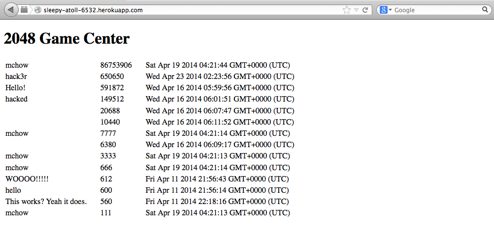

Introduction
I have been asked to perform a security assessment of Krishna Soni's 2048 Gamecenter application. The application was developed to provide an API to submit high scores (with an attached username and end grid) for the game 2048 via a POST request (submit.json). The application also includes two GET APIs, one that retrieves all scores and grids for a specified user (scores.json) and one that displays overall high score information in HTML. I provide an overview of vulnerabilities, how they could be exploited, and some simple ways to go about fixing them.
This report is intended only to provide a summary of a few of the biggest security issues and is by no means all-inclusive. All web applications are vulnerable to attacks, and nothing is 100% secure. With this in mind, the following report focuses on a few glaring issues that should be addressed immediately.
Methodology
In order to test the security and find the most threatening vulnerabilities, I performed two stages of testing. First, I black box tested the application using simple open-source tools such as cURL. During this stage, I also used my knowledge of the requirements of the web application's requirements.
In the second stage, I analyzed the source code of the web application.
Abstract of Findings
The three issues that I detail below are significant threats to the security of 2048 Gamecenter. All of them can be fixed relatively easily, and I have provided possible solutions within the report. The first two issues exist because a user's input is not rigorously checked for malicious content, and the last issue comes from allowing anyone to add unlimited content to the database.
Issues Found & Technical Analysis
Initial Phase: Black Box Testing
Issue #1 - XSS (Cross-Site Scripting)
Location of Vulnerability:
Any GET API - in this case, the root and /scores.json
Severity: Very High
This threat is severe due to the ease of exploitation and the potentially far-reaching effects of an attack. Not only can an attacker post anything to the site, but he/she could also redirect visitors to a harmful website. All data in the GET APIs could be tampered with, meaning that anyone relying on the scores.json API could also be affected by an attack.
Description:
I found this issue by black box testing the application using the cURL tool. As I made a similar application, I had an idea that curling malicious code could be an effective attack.
Cross-site scripting allows the attacker to inject Javascript or HTML via the POST API -- in this case, submit.json. Because user input is not validated sufficiently, my attack succeeded in embedding a video of a baby monkey riding backwards on a pig. This video now shows up for anyone who accesses the homepage of the web application.
I simply ran the following command:
curl --data "username=<iframe width='560' height='315' src='//www.youtube.com/embed/5_sfnQDr1-o?autoplay=1' frameborder='0' allowfullscreen></iframe>&score=650650650650&grid=babymoney!" http://sleepy-atoll-6532.herokuapp.com/submit.json
And the result:


Resolution:
We can resolve this issue by sanitizing/validating user input. This could be done a variety of ways. My solution includes installing a Node.js module called validator, and calling a function called sanitize. Here are the relevant lines of code:
var sanitizeInput = require("validator").sanitize;
And then, in all POST APIs, call this function along with the Javascript escape function. For example:
username = sanitize(request.body.username).escape();
Issue #2 - NoSQL Injection (PHP)
Location of Vulnerability:
scores.json GET API
Severity: Moderate
By injecting a few characters, we can perform a GET request that queries the entire database and returns everything. In this case, the homepage of the web application already returns all of the scores in the database. However, if the database contained other fields or sensitive information, this could be an even more severe threat.
Description:
This type of injection is possible by inserting a few characters into the query, which tell the database to search for everything not equal to the search parameter. For example, going to the URL
http://sleepy-atoll-6532.herokuapp.com/scores.json?username[$ne]=XXX returns every document in the database that does not have the username XXX.
Example:

Resolution:
The solution here is the same as the first issue: We must sanitize user input to assure that no malicious queries are allowed.
Side Note:
I haven't looked at the source code yet, but there is a key, __v, that seems to be unused in this web application. While the presence of this extra key in all documents is not a security vulnerability by itself, it is very inefficient.
Secondary Phase: White Box Testing and Source Code Analysis
Issue #3 - Denial of Service
Location of Vulnerability:
submit.json POST API
Severity: High
A denial of service is relatively simple and can bring down the entire application. While this attack does not alter or access data previously stored in the database, it is easy to orchestrate. This DOS attack results in (usually temporary, until the database is cleansed) application downtime. It could also result in excessive database costs if there is no limit set.
Description:
As I reviewed the code in web.js, it became apparent that there is no validation on the input or rate limiting. Anyone can POST to submit.json an unlimited number of times and the POST will succeed as long as the fields username, score, and grid are included. This can ultimately overflow the database, because no database is infinite. In this case, the MongoDB used on Heroku with the MongoLab addon can support up to half a gigabyte of data, so I simply needed to write a script that posted at least 512 MB of data.
Example:
Resolution:
There are a few ways to resolve this issue. The simplest way is to restrict access to the POST API to only trusted domains. This can be done by replacing the wildcard character in this line of code:
response.header('Access-Control-Allow-Origin','*');
with the domain of a trusted user. Additionally, we could resolve the issue by creating API keys or by limiting the number of POST requests each domain is allowed to have. This can be done simply by keeping track of the number of POSTs from each domain.
Side Note:
Simply limiting the number of POST requests from each domain would probably not protect against a distributed denial of service on this API. And a DDoS is always possible on the publicly accessible GET APIs, but this application is not likely to be a target for this type of large-scale attack.
Conclusion
Most of the issues I've outlined above are due to insufficient validation of user input and the fact that cross-origin resource sharing is universally enabled and allowed. These issues can and should be fixed easily and quickly.
Of course, there are other vulnerabilities in 2048-Gamecenter that are not discussed above. There is almost no built-in security for Mongo; however, because this application does not contain highly confidential information, using a NoSQL database like Mongo is sufficient. SSL encryption is another security feature that could be explored, but for the same reason -- that is, because of the nature and goals of this application -- it is out of the scope of this report.
After these fixes are made, a follow-up security assessment, as well as a re-evaluation of the goals of this application, should be made. I can help with both of these.